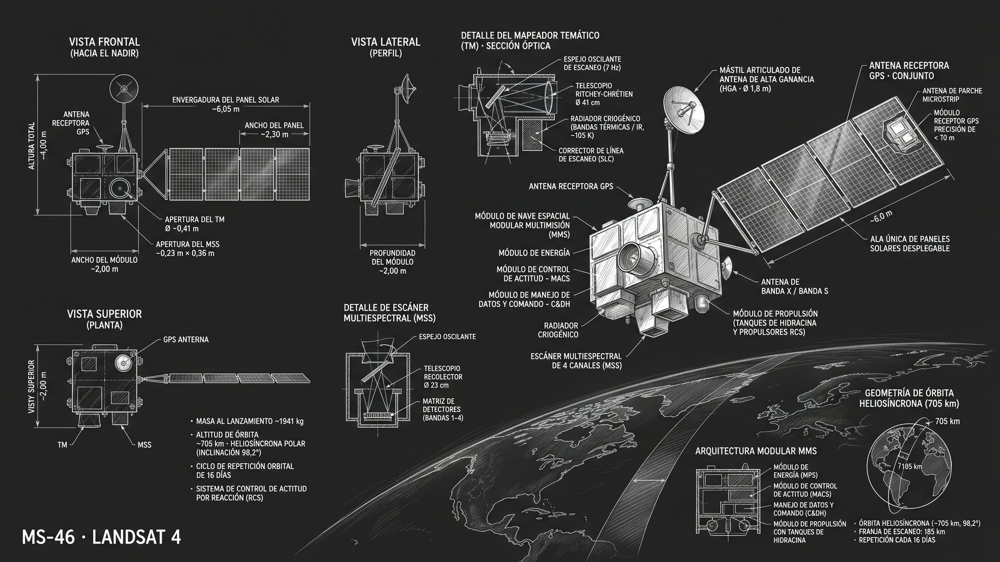

Landsat 4

Fue el primer Landsat de una generación nueva, con el Thematic Mapper, un instrumento de siete bandas que multiplicó el detalle de la mirada sobre el terreno. Con él llegaron las primeras imágenes en color natural del programa y el primer receptor GPS que voló en un satélite civil.
Sus sensores dejaron de recoger datos a finales de 1993, tras fallar su última capacidad de descarga, y el satélite se mantuvo en órbita para telemetría de mantenimiento hasta su baja definitiva el 15 de junio de 2001. No consta en las fuentes consultadas la fecha de su reentrada atmosférica. Personas: Howard Heuberger, Leonard Church
Lo que hizo
- El color natural del planeta — El 25 de julio de 1982 mi Thematic Mapper entregó la primera imagen que pudo mostrarse en color natural, con el lago Erie oriental, Toledo, Detroit y Windsor en el encuadre. Mis siete bandas, con 30 m de detalle en el visible y el infrarrojo, abrieron aplicaciones que el MSS no alcanzaba, como la batimetría y el cartografiado de arrecifes.
- El primer GPS civil en órbita — Fui el primer satélite civil que llevó un receptor GPS a bordo, cuando solo cuatro de los veinticuatro satélites previstos estaban operativos. Los investigadores del Goddard demostraron que podía calcular mi posición con un margen de 50 m y mi velocidad con seis centímetros por segundo.
Modelo 3D, chat y cómic, en tres idiomas
Fuentes
- landsat.gsfc.nasa.gov/satellites/landsat-4/
- www.usgs.gov/landsat-missions/landsat-4
- science.nasa.gov/mission/landsat-4/
Ver el índice completo · Proyecto del NASA Space Apps Challenge 2026. Contenido con fuentes citadas.